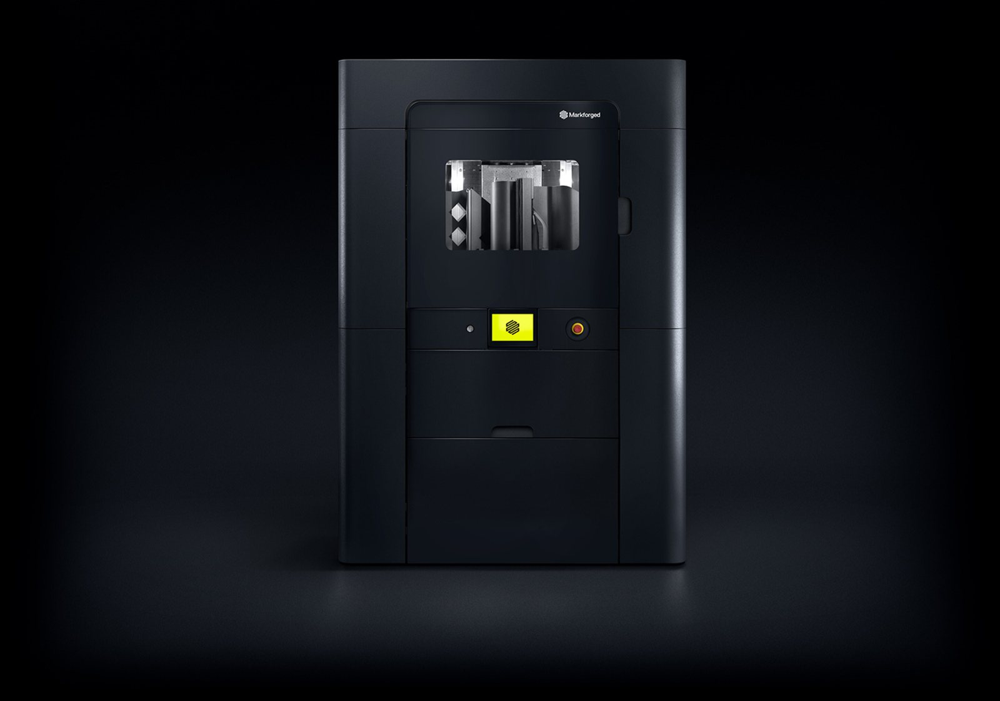
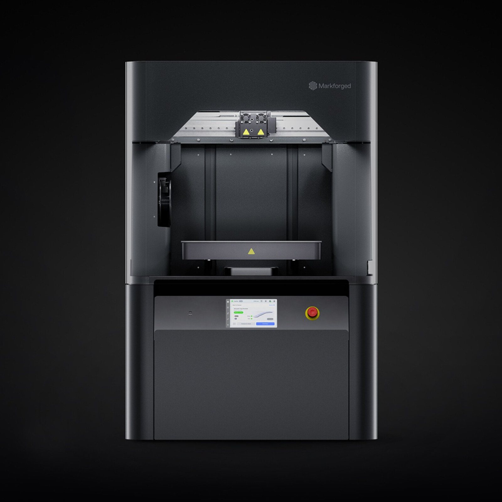
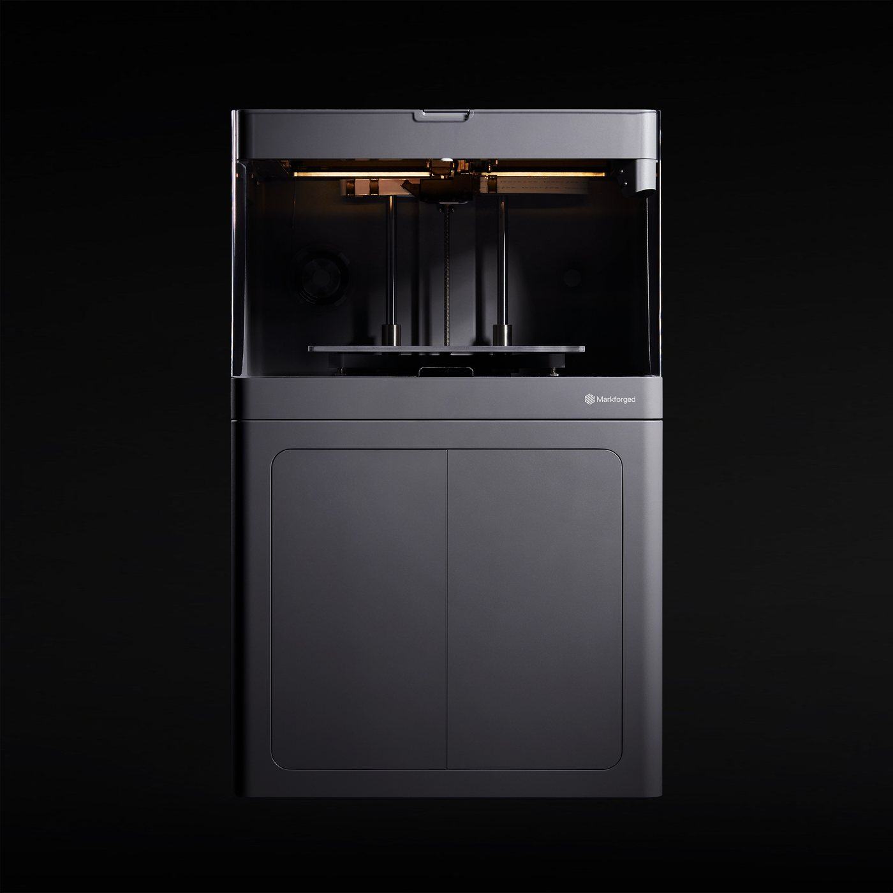

Greater China Region & Vietnam
MEDIA HUB
Press Releases · Event Reports · Industry Insights
Press Releases · Event Reports · Industry Insights
Equipment health checks for existing Markforged customers, plus trade-in of industrial 3D printers of any brand. Each market is run by its local partner, with its own page, language and contact.

Health check · Trade-in
Health check · Trade-in
Health check · Trade-inJapanese auto parts maker Kojima Industries replaced machined metal robot hands with parts printed in-house on Markforged 3D printers: 67% lower part cost, a 14-day outsourced lead time cut to one day, and about 30% less design work on some parts.
Yamaha Fine Technologies, a Yamaha Corporation group company that makes genuine-wood automotive interior parts, moved jig production in-house with the Markforged X7: jig lead time fell from about 7 days to 1, jig cost to about 25%, and the X7 now runs about 2,000 hours a year.
WESCAD builds welding, assembly and testing fixtures for the German automotive and commercial vehicle industry. With the Markforged FX10, many fixtures once made from aluminum are now printed with continuous carbon fiber; the printer runs around the clock at 100% capacity, and some reference fixtures cost up to 75% less than milled versions.
Three LizzieSats are already operating in low Earth orbit. Sidus Space printed the satellite's structure in continuous carbon fiber and Onyx — after the material spent a year outside the International Space Station with no degradation.
At Project Convergence 22, the British Army's Royal Electrical and Mechanical Engineers (REME) deployed two polymer 3D printers that can print on the move. They received files for spare parts US sustainment forces could not get through their own supply chains, converted and printed them, and provided the parts to US forces for use on the battlefield.
Norway's Fieldmade AS built the Nomad® LW, a mobile printing system that travels in trucks and shipping containers and by air freight, around the Markforged Mark Two. It printed as many of the system's own parts as it could in Onyx, much faster and 10x cheaper than machining aluminum.
In an official Markforged webinar, rail manufacturer Alstom explained how it prints locating jigs for train side profiles with continuous fiber: requested on Friday, delivered on Monday, and cheaper than buying from suppliers — one of hundreds of jigs printed each month.
On 15 October 2026 Automation Alley, Michigan's Industry 4.0 knowledge center, announced a $7.5 million Phase I Task Order under the IBAS program to validate IP-protected distributed additive manufacturing. NCDMM is prime contractor; Markforged and Fraunhofer USA are executing partners.
Australia's Plane Support has gained CASA APMA approval to additively manufacture cabin air conditioning ducting for the Bell 214B. The first publicly citable civil aviation additive approval in Asia-Pacific — and the approval covers the manufacturer and the process, not a printer brand.
During the US–ROK exercise CJLOTS 26, US Marines reverse-engineered and 3D printed a Coast Guard boat strainer inside an X-FAB expeditionary shelter in under half a day, at about $12 per part, returning a roughly $600,000 rigid-hull inflatable boat to service.
In customer videos released by Mark3D, Markforged’s authorized distributor in Germany, Volkswagen Autoeuropa, CLAAS and thyssenkrupp Automation Engineering show continuous fiber 3D printing at work on automotive, agricultural-machinery and battery production lines.
One line of technical scope in Automation Alley's $7.5 million IBAS Phase I Task Order is skipped by most coverage: the parts must be made using validated processes. That line defines the real threshold for distributed manufacturing — not how many machines, but how many qualified processes the fleet shares.
The de-risking debate stops at component origin. But where your manufacturing data lives, and whether you can build on time without someone else's queue, are the other two layers. Brian Chen, Country Manager for Greater China and Vietnam at Markforged, on a three-layer model drawn from high-security deployments.
Generative AI lets design iterate by the day in the digital world; the bottleneck is now on the physical side. Brian Chen, Markforged Country Manager, Greater China and Vietnam, on continuous fibre, moving fixtures off the CNC schedule and digital inventory, and how they compress the path from design to volume production to days.
Beyond software, silicon and compute, what determines how far Physical AI can go is manufacturing. Brian Chen, Markforged Country Manager for Greater China and Vietnam, on the three structural constraints of physical realisation.
Markforged has appointed its Diamond Partner TwoWay as Master Distributor for Vietnam, with application centres in Hanoi and Ho Chi Minh City and a local reseller and service network, to bring industrial additive manufacturing onto the production floors of one of Asia's fastest-growing manufacturing economies.
Markforged has appointed Unotech Limited as its exclusive distributor in Hong Kong, announced at a launch event at HKPC. The programme included a live demonstration of Continuous Fiber Reinforcement and a Red Dot-winning saddle developed at PolyU.
On 22 September 2026, Markforged and HiLO signed a memorandum of understanding in Zhongshan, Guangdong to build a South China Center of Excellence. Both sides positioned the centre as an industrial application and incubation platform rather than an equipment showroom.
On 7 October 2026, Invenio 3D and Markforged hosted an invitation-only executive breakfast roundtable alongside Land Forces 2026 in Perth. Five speakers and twenty manufacturing principals spent the morning on one question: if Australia is to keep manufacturing capability onshore, it first has to know where in the value chain it sits.
Markforged held a Mould and Cutting Tool Industry Forum in Guangdong on 17 September 2026. Country Manager Brian Chen argued that the real lead-time bottleneck sits in tooling rather than in the machine tool, and backed it with ten published cases and parts handled on the floor.
On 25 August 2026 the Military Technical Academy and Tan Tien Industrial Equipment (AIE), with the VAMI association, hosted a seminar in Hanoi on 3D digital manufacturing for defence technical support. Markforged attended by invitation and Suraj Sethi, Sales Director for APAC South and Greater China, presented six fielded defence applications and how digital inventory addresses obsolete spare parts.